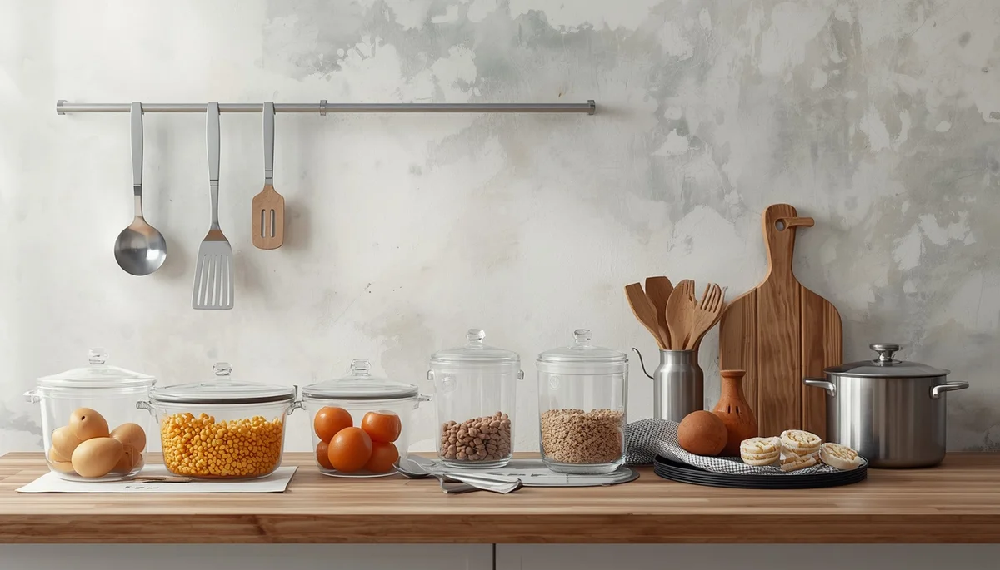

Menaje seguro, plásticos y almacenamiento de alimentos
La forma en que se preparan, calientan y almacenan los alimentos cotidianos influye directamente en la exposición de los menores a sustancias químicas indeseadas. Ciertos componentes presentes en los envases plásticos pueden migrar hacia la comida, especialmente al entrar en contacto con temperaturas elevadas o grasas.
Evitar el calor en envases plásticos
Calentar comida o líquidos en recipientes de plástico dentro del microondas acelera la liberación de compuestos químicos como los bisfenoles y ftalatos. Sustituir estos recipientes por alternativas de vidrio, acero inoxidable o cerámica para calentar y conservar los alimentos protege de forma eficaz la salud metabólica e infantil.
Elección consciente de materiales para el día a día
A la hora de elegir tarteras, botellas y utensilios para el colegio o las excursiones, priorizar materiales inertes como el acero inoxidable o el vidrio templado evita el desgaste de los polímeros sintéticos y reduce drásticamente la presencia de disruptores endocrinos en la dieta.
"Utilizar recipientes inertes para conservar y calentar los alimentos es un paso fundamental para evitar la transferencia silenciosa de químicos a la nutrición infantil."
Precaución con latas y revestimientos internos
Los alimentos envasados en latas metálicas suelen contar con resinas epoxi en su interior para evitar la corrosión. Reducir el consumo de conservas procesadas y apostar por productos frescos o almacenados en tarros de cristal minimiza esta fuente oculta de exposición química.
➔ Volver al índice de Salud ambiental infantil